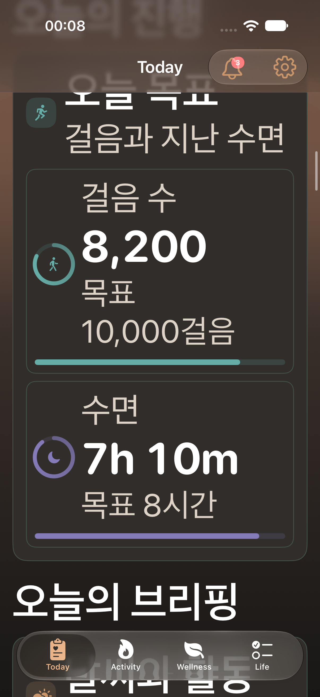
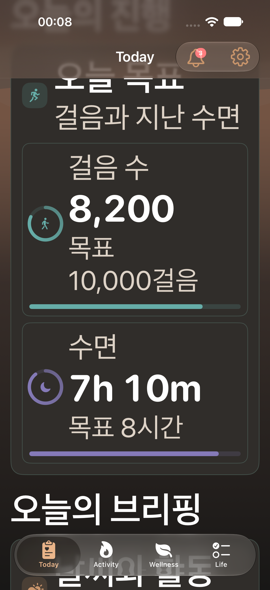
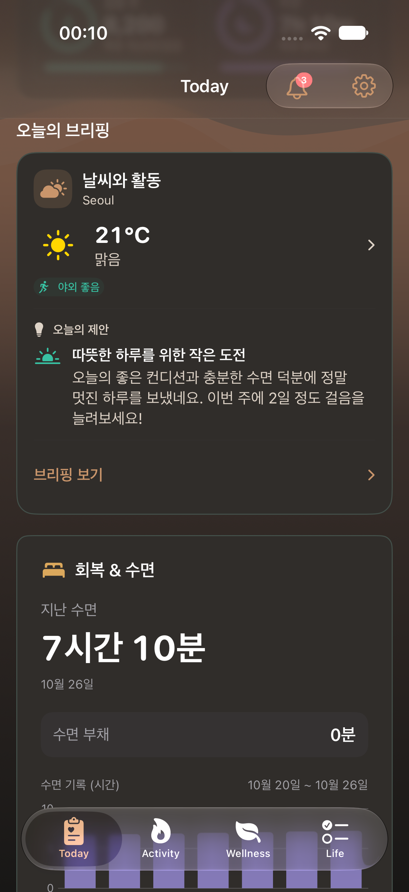
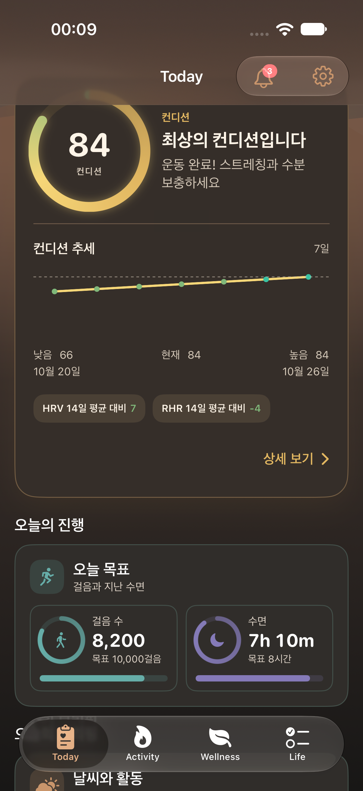
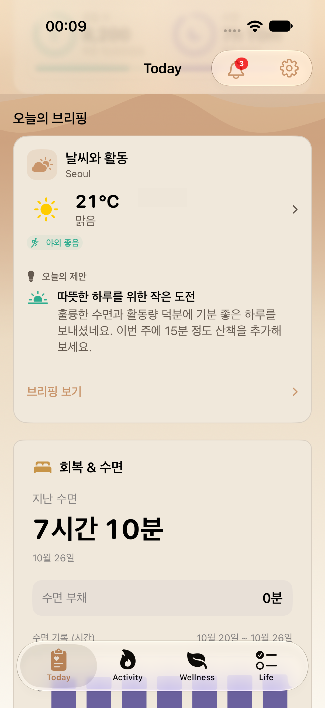
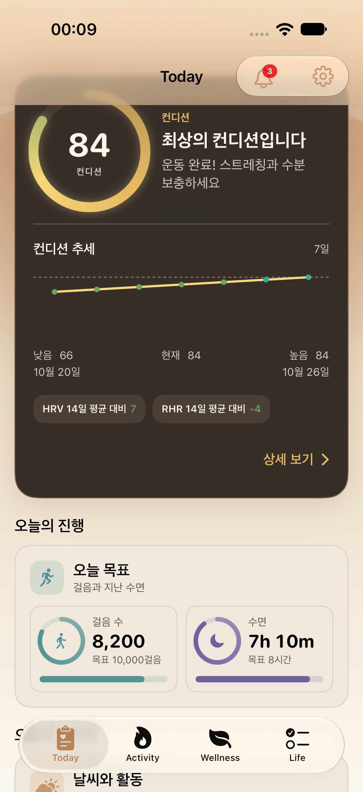

2026-10-26 · 전용 iPhone 18 Pro · 낮 12시 mock · UI 2개 실행 2개 통과. 회복·수면은 최신 main 구현을 유지합니다.
밝음·어두움은 두 카드 전체, 최대 글씨는 두 진행 타일을 확인했습니다. iPad·Duo·전체 회귀·최대 글씨 브리핑은 이번 실행 범위 밖입니다.
캡처 출처와 소스 해시 · 검증 범위





